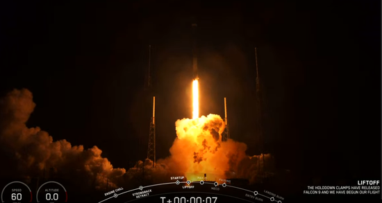

2020年1月7日
星链卫星：SpaceX进行2020年首次发射
1月7日消息，SpaceX刚刚进行了2020年第一次发射，火箭升空，携带着60颗星链卫星。火箭发射后8分钟， 第一级成功地在回收船上降落，这是公司第48次成功回收助推器。这是SpaceX的第三批Starlink卫星， 旨在提供全球互联网接入。该公司于去年5月推出了第一批60颗卫星，随后在11月又推出了60颗。
据外媒SpaceNews报道，SpaceX公司表示，该公司计划最早在2020年年中通过Starlink互联网卫星星座为其客户提供宽带服务。 SpaceX总裁兼首席运营官Gwynne Shotwell在华盛顿举行的媒体圆桌会议上告诉记者，为了实现这一目标， 该公司需要完成六到八次发射，每次将需要发射60颗卫星。
星链正在升空
如果发射成功，将拥有180颗商业卫星，成为全世界最大的卫星公司。
SpaceX最终可能会发射上万颗Starlink卫星，这些卫星旨在在地球上方的低空运行，并向下方的地面发射互联网覆盖。
迄今为止，SpaceX已获得美国联邦通信委员会的许可，可以将近12000颗卫星送入轨道。
就在上周，该公司又向国际监管机构国际电信联盟（ITU）提交了另一项要求，要求为另外30000颗Starlink卫星安排频谱。
这意味着该公司希望能够将大约42000颗卫星发射到轨道上。
该公司发言人在一份有关国际电联新备案的声明中表示，随着全球对快速、可靠的互联网的需求不断增长，
SpaceX正在采取措施以负责任的方式扩展Starlink的总网络容量和数据密度，以满足用户预期的增长
